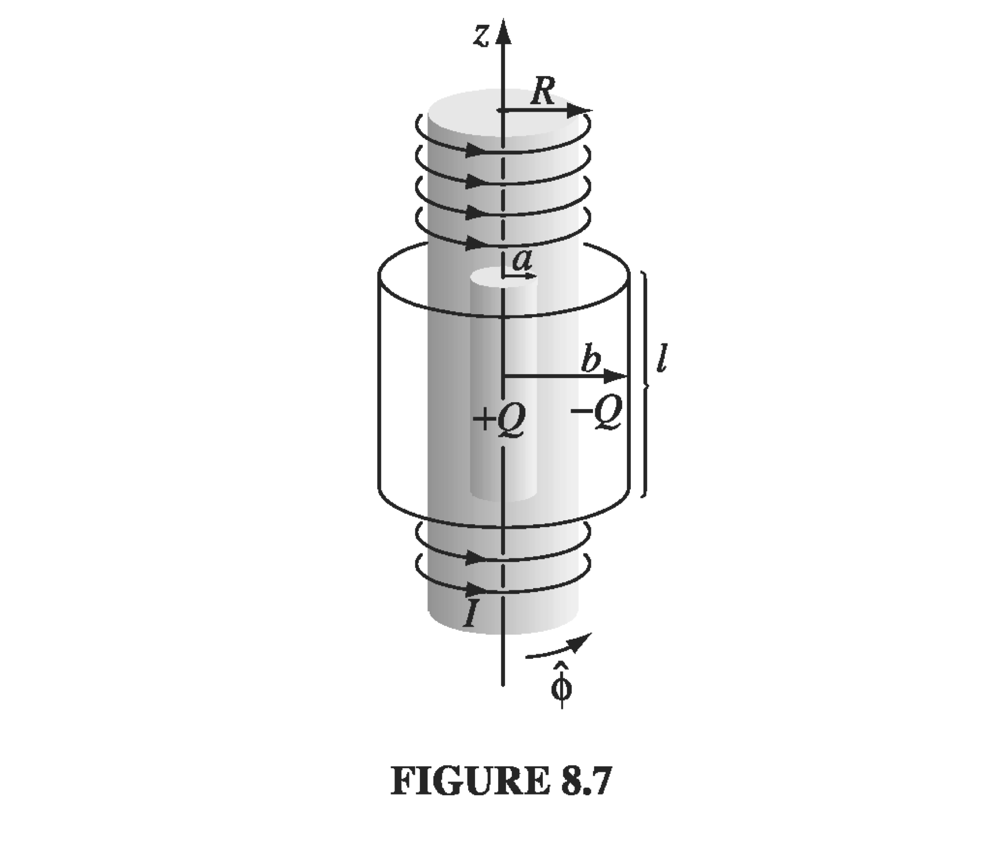

8.2: Momentum#
In this chapter we talk about:
Electromagnetic momentum
Maxwell stress tensor
Conservation of electromagnetic momentum
Angular momentum in EM fields
8.2.1: Electromagnetic Momentum#
As it turns out, if you disregard the momentum associated with electromagnetic fields, Newton’s laws appear not to work out! Consider a basic system in cartesian coordinates of two moving point charges:

What happens between the two charges? Well, the magnetic field of \( q_1 \) points into the page at \( q_2 \), so the magnetic force on \( q_2 \) is to the right, and the magnetic field of \( q_2 \) is out of the page at \( q_1 \) , so the magnetic force on \( q_1 \) is upward. The net electric force between the two charges is repulsive and opposite, but the magnetic forces aren’t, so the electromagnetic force on \( q_1 \) on \( q_2 \) is equal but not opposite to the force of \( q_2 \) on \( q_1 \), in violation of Newton’s third law! We’ve got a problem, and we’re going to solve it by invoking the momentum of the EM field.
8.2.2 The Maxwell Stress Tensor#
The way to recover conservation of momentum proceeds the same way we recovered the conservation of energy via the Poynting vector. Starting with the basic Coulomb/Lorentz laws, we’ll write down an expression for the electromagnetic force on charges in a volume. We’re going to integrate that over all space, which can have any distribution of charge, and relate that expression for force to an expression which only involves the field. In the interest of brevity, we’ll skip around a bit and leave the full derivations for the real textbook.
Suppose we have a volume \( V \) containing some distribution of charge, current, and electromagnetic fields. The total force on that volume is
Again, the goal is to replace anything that looks like a source in favor of fields, using Maxwell’s equations. It’s handy to define the force per unit volume \( f \):
Skipping through a few steps, we cut to the chase. Similar to the derivation of the Poynting theorem, also using the other two Maxwell equations we haven’t yet, we get
where \( \vec S \) is the Poynting vector and \( \overline{\vec T} \) is the so-called “Maxwell stress tensor.” To keep in mind what kind of units we’re talking about here, \( \vec f \) has units force per unit volume, and the divergence will strip one spatial dimension, so the Maxwell stress tensor will have units of stress (force per unit area).
The tensor has diagonal “pressure” terms and off-diagonal “shear” terms. For “pressure” forces, the force and area are in the same direction, and in the “shear” case the force and area are orthogonal.
The divergence term \( \nabla \cdot \overline{\vec T} \) is itself a vector
As we do the volume integral to go from \( \vec f \) to \( \vec F \)
8.2.3 Conservation of Electromagnetic Momentum#
The first term on the right is related to the momentum stored in the electromagnetic field. The second term is the rate at which momentum flows across the surface, and we describe the left-hand-side as the rate of change of the momentum of charges within the volume.
We identify another useful term as the first integrand on the right:
which is the momentum density within the fields. Just as a note, the signs here are swapped from the Poynting theorem - the Maxwell stress tensor is defined such that momentum flowing into the region corresponds with increasing \( \overline{\vec T} \), and vice-versa, opposite the case we had with \( \vec S \).
In a charge-free region,
and since the above is true for all regions \( V \), we have our familiar continuity-type equation
Example: Problem 8.7#
Consider an infinite parallel-plate capacitor, with the lower plate (at \( z = -d/2 \)) carrying surface charge density \( -\sigma \), and the upper plate (at \( z = +d/2 \)) carrying charge density \( + \sigma \).
(a) Determine all elements of the stress tensor, in the region between the plates.
(b) Use \( \vec F = \oint_S \overline{\vec T} \cdot \mathrm{d} \vec a \) at the boundary to determine the electromagnetic force per unit area on the top plate.
(c) What is the electromagnetic momentum per unit area, per unit time, crossing the xy plane (or any other plane parallel to that one, between the plates)?
(a) Lucky for us, the magnetic field between the plates is
The electric field is very simple
So we can already tell that the off-diagonal terms will be zero, since they all contain two factors of \( E_i E_j \), one of which will be zero. The \( B \) terms on the diagonal will be zero, and
(b) The force on the top plate will be
(c) This is just to show us that the momentum flow through the interior of the capacitor is the same as whatever force is pulling the top and bottom plates apart.
is the momentum in the z direction crossing a surface perpendicular to z, per unit area, per unit time.
8.2.4 Angular Momentum in EM Fields#
As a reminder, we associate with the electromagnetic fields an energy density
and a momentum density
For that matter, we define angular momentum in the normal fashion
where the presence of \( \vec r \) means it’s defined about some point or axis.
Example 8.4#
Imagine a very long solenoid with radius \( R \), \( n \) turns per unit length, and current \( I \). Coaxial with the solenoid are two long cylindrical (non-conducting) shells of length \( l \) - one inside the solenoid at radius \( a \) carries a charge \( +Q \) distributed uniformly over its surface; the other outside the solenoid at radius \( b \) carries charge \( -Q \) . When the current in the solenoid is gradually reduced to nothing, the cylinders begin to rotate. Question: where does the angular momentum come from?

We’ll start by writing down the initial angular momentum of the system, then see what happens when we start to change the current. It is assumed that the solenoid is very long compared with the charged cylinders, and that the length of each charged cylinder is much much greater than its radius.
The initial \( \vec E \) is given by looking at a Gaussian cylinder between the two charged cylinders
The initial \( \vec B \) is just that of the solenoid, namely
The linear momentum density we defined earlier is
And the angular momentum density with respect to the cylindrical axis is
And it will point in the \( - \hat z \) direction
So that’s the initial angular momentum. Of course, nothing is moving, so this is just the momentum stored in the EM fields. Assuming nothing like friction complicates the situation, any angular momentum lost by the EM fields will be transferred to the cylinders as rotation.
As we crank down the current, we know that a time variation in the magnetic field implies an induced EMF \( \mathcal{E} = - \dv{\Phi}{t} \). \( \vec E \) experienced at radii \( a \) and \( b \) are now different. Use Faraday
This field is in the direction to torque cylinder \( +Q \)
Integrating torque over time, we get the changed angular momentum of the cylinder
What happens to the outer cylinder? Something very similar, but when we calculated from Faraday’s law our loop radius is \( b \), and the area of flux is \( \pi R^2 \)
So the total angular momentum once the current is finally turned down is
which is exactly the angular momentum that was stored in the fields, so we’ve successfully conserved angular momentum :)